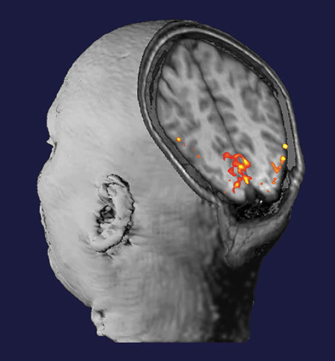

|
BY JEAN CHEN Video interview conducted by Pamela Douglas and Martin Lindquist Many working in or with MRI know about Mark Cohen’s contributions to neuroimaging. He played a critical role in developing practical echo-planar scanning, ultra-fast MRI applications, contrast-based and BOLD functional MRI and applications of linear systems analysis to increase fMRI sensitivity and resolution. As the creator and director of the UCLA/Semel NeuroImaging Training Program Mark has pushed his students to an integrative understanding of the role of imaging in neuroscience: the use of images as hypothesis tests and the relationship between blurring, convolution, statistical error and inference from images. We spoke to Mark to find out his background and the rationale behind the neuroimaging training program.  Mark Cohen (Reed Hutchinson/ UCLA). Mark is the Winner of the Education in Neuroimaging Award at OHBM 2017. Martin Lindquist: Seven or eight years ago Mark approached me about teaching a class at his annual neuroimaging training program at UCLA. It lasts two weeks and is very intensive. It’s an amazing program, allowing people from many different disciplines to learn from the ground up. Everything involved with regard to neuroimaging -- how to collect the data, k-space, acquisition, reconstruction, pre-processing and analysis -- is discussed in the course. It really brought up the skillset of the students and provided a lot of exposure to what may have been a new field. They worked in teams, developing collaborations for life as they were learning, collecting data together and working together. When OHBM started this award it seemed as if it was written for Mark. Everyone wanted to be involved in co-nominating him. We were all very impressed with what Mark had achieved. Pamela Douglas: Mark, can you tell us what gave you the idea for the neuroimaging training program? Mark Cohen: Back then it was pretty clear that there was a lot of bad science going on. It was clear to the folks at the NIH that there were problems; a lot of people came into the field without a core understanding of the type of work that they were trying to do. Because the field is so intensely multi-disciplinary it was clear that we needed to find people with means to access a lot of stuff outside their original core skillset. For about three years, starting 2002, I lobbied the NIH, and said “it’s a really expensive field to do science in. You need to set some sort of bar for the level of knowledge that people need to have!” I was very fortunate that somebody in there heard my pleas. In particular this was supported by Steve Grant, who was previously my program officer. Steve was a huge advocate for my idea. He actually went to various institutes at the NIH and got money to put together an RFP (Request for Proposals) to develop a neuroimaging training program. Amongst the things we wanted in there were that it had to be open to people being brought in from outside fields, whose skillsets weren’t traditional neuroscience. It was critical to me that it had to be internationally focussed. We were able to fund students at the US graduate level and higher. We were also able to fund international students from what they called an R-90 mechanism. So, you could actually take in students and give them stipends from outside of the country. That was really incredibly valuable. The other benefit of the grants was an award of $100,000 a year to put on a summer program. The summer program was really our major form of outreach. Pamela (PD) was a student in the original program. Pamela: The training program is a mixture of hands-on and theory. We were able to go from a few op-amps and then to suddenly have a working EEG system. That mixture of applying everything was really effective. Was there something or someone that inspired you to be able to integrate these different mechanisms of teaching? Mark: I think we always felt in the lab that this kind of science was group science. Again, it was so multi-disciplinary – it was essential that you turn around and respect the person on the other side – whether they’re bringing you knowledge from squishy crafts like psychology or boring stuff like MR physics, or even worse, Math. You have to understand that all those domains are critical. Part of the process of learning is to understand what those pieces bring to the table, to bring ownership of their flaws, but also ownership of the fact that it’s important knowledge that’s needed in the team. When we set up the summer course, one of the fun things we did was to organize people into groups and get them to define a research question. We taught them an entire week’s worth of methods, then set them free on the scanner. I had a terrific team of people in UCLA who would sit there and make the experiments happen. So, someone would come up with a crazy idea for an experiment and some talented person like Cameron Rodriguez or Agatha Lenartowicz would write all the code, and build the devices. The students would help build these things. The students were then organized into their teams, largely by my colleague Susan Bookheimer, who would say: “we need a psychologist on this team, we need a physicist on this team, and so on”. They would run the experiments. They would analyse the experiments in the second week of the course, then present the results at the end. The learning experience was terrific but I was also intensely proud of how many people went back with lasting collaborations, people that continue to research and publish together. That was a very successful part of the course. Pamela: Do you have a favourite topic to teach, since you teach across domains? Is it MR physics? Mark: No. I’ve been teaching MR physics for 32 years. I started doing that in the context of training at Siemens medical systems. This is a true story - I have fallen asleep giving a lecture in MR physics! There’s a point at which it just spills out. For me the most important thing to teach is for people to look intimately at their data and get an eye for not only not being credulous about the stuff that’s in there, but also to look at it and say “that’s not the pattern that I expected.” There’s a frequent tendency for people to look at their data and say “it’s not the pattern I expected to see. What’s wrong with my data?” That’s “wrong-think”. Obviously the discovery comes from seeing where your data challenges you. Pamela: Do you have any advice for how to become a better educator? Mark: You need a mission involved in the teaching program. You shouldn’t be thinking just about “what is the field? How do you teach the field” But instead think about “what practical knowledge do you need?” I try to organize the course around the needs of the students in the room. The more time you spend doing it, the more the flow comes. You don’t get nervous after you’ve taught 1000 times. Also, not everybody’s best teaching is done in front of a podium. A lot of people’s teaching mode is best one-on-one. Recognizing where you’re most effective is, I think, really important. Mentorship and direct one-on-one is at one level, at least as important as standing up in front of a thousand people in a society meeting and yammering at them. Jean Chen: Amongst other achievements, you were involved in the first successful experiment to produce fMRI activation maps in the human brain (the famous cover of Science). What led you to become a neuroscientist? What would you say is behind your success? Mark: I entered college as a Music major, with an interest in performing music. Soon after, I realized that this was not the way to pursue my personal interest in music, so I switched out of that and decided to turn my attention to understanding human hearing. At that point, I became invested in Neurophysiology. I did a lot of classic lab work in neural labs, learning about electrophysiology, dissecting animals, attaching nerve endings to electrodes and so on. However, I became unhappy with that work for a number of reasons, most importantly because my interests were more cognitive rather than physiological. This was at a time (early 1970’s) when the whole field of neuroscience was suffering from the theory of behaviourism (John Watson, B. F. Skinner), which defined all behavioural science only in terms of inputs and outputs, discredited the idea of there being something conscious inside the brain. It left me disaffected with the field and switch into Electrical Engineering, which embodies another aspect of Music. I entered Electrical Engineering (MIT) with an interest in musical applications. But over time, I re-entered Neuroscience, completed a Master’s in Human Biology (Stanford), and then a PhD in Neuroscience (Rockefeller University). My early work was in classical neuroscience, but as I became more aware of the technology surrounding neuroscience, I realized that I could attach electrodes to every nerve in a rat and still have no idea how it feels. So, after my PhD, I went on to work on medical technologies, since I have the right background (Engineering and Neuroscience). I had an idea to build small bedside instruments like physiological monitors. To get experience, I took a job in MRI -- but thought it wouldn’t last because the MRI was so impractical, so incredibly expensive and slow (chuckle). I spent a long time working at Siemens MRI but realized we could do better with MRI. So I spent virtually my entire time to try to speed up MRI. We made some really good progress fast 3D imaging using modifications of the FLASH sequence. Then I went on a conference on fast imaging (run by E. Mark Haacke), and heard Richard Rzedzian and Ian Pykette on EPI (echo-planar imaging) of the heart. EPI was very grainy, low resolution of the beating heart that electrified me. After that, I quit my job at Siemens to go work with these guys on EPI. Their big interest was cardiac imaging, and I took over as Director of Applications for their company. I invested a lot of time on developing brain imaging applications (since 65% of MRI applications were in the nervous system). We took the special resolution from 4.5 mm to 2 mm with negligible scan times, and built up the protocol for brain imaging. I was in charge of translating this technology, and was fortunate to have hooked up with the MGH group (Bruce Rosen, Arno Villringer, Van Wedeen). We developed the first practical diffusion MRI by using EPI. We started on tractography, but then we got interested in perfusion. Jack Belliveau had suggested that EPI could be used for fMRI applications. Jack came to our Lab on Advanced MRI, and we did first fMRI experiments (Robert Weisskoff, Jack, Bruce, Arno). We shot some contrast in our volunteer and got our first fMRI images. Every single person in the room had understood what had just happened --- we had a way to look into the human brain. It was a huge door opening -- all the things I had wanted to do, I could finally do! It was a combination of serendipity and vision! After those fMRI experiments, I was hired by Harvard. As it happens, I actually had some formal training in graphic arts and had the opportunity to create the Science cover. The story about this cover can be found here.  Cover image of Science Magazine --- the first fMRI experiment (Belliveau et al. “Functional mapping of the human visual cortex by magnetic resonance imaging.” Science, 1991). Jean: In this increasingly demanding and competitive research environment, can you provide two pieces of advice to new/emerging/aspiring scientists?
Mark: My top advice for young investigators is “trust your instincts”. You should pursue only the things that you feel truly passionate about. I learned tons of engineering (signal processing, etc) by building guitar effects panels. Also, learning to program computers was fun so I got good at it. I became interested in cognitive neuroscience because of my interest in philosophy early in life. The passions make you skilled, and allow you to find a way to apply your skills. Jean: Finally, I understand that your current research interests go beyond neuroimaging, reaching out to astronomy and nanoscale imaging. How do these broader imaging domains come together in your mind, and what are some of the problems you’d most like to work on? Mark: I am beyond excited about sparse sampling. This work has its origins at UCLA with people like Stanley Osher, Terence Tao. The MRI community knows about this --- with a very sparse sampling, satisfactory images can still be reconstructed. However, there is a much deeper part of that --- every bit of information we receive is sparse, and our brains do a trick like in sparse reconstruction, filling in the missing information. We infer huge amounts of structures with the few pieces of information we see through our eyes. I believe there is something profound to be discovered from sparsity. My knowledge in it comes from my MRI background, but it goes beyond MRI. Most of us work in medical centres, but there are a lot of smart people around the university. Integrating my work across disciplines has brought me into Chemistry, Applied Math, Astrophysics and so on. As long as you understand our shared interests and understand the talent outside the neuroimaging world, the possibilities are truly exciting. Postamble (Jean): When I spoke to Mark for part of this interview, he was changing lightbulbs in his lab. When I conveyed my surprise at his hands-on leanings, he laughed and said it was “a normal part of his day”. Maybe his excitement at the chance to “get his hands dirty” is behind his dynamic outlook on research. Maybe that is something else that young investigators should learn from. Thanks to Mark, and to Sarabeth Fox for filming.
0 Comments
Your comment will be posted after it is approved.
Leave a Reply. |
BLOG HOME
Archives
August 2023
|
 RSS Feed
RSS Feed
{kind=link}